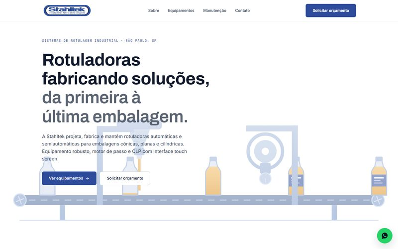

Stahltek Rotuladoras
Fabricante de rotuladoras industriais: catálogo de equipamentos, serviço de manutenção e pedido de orçamento.
- Tipo
- Site institucional
- Stack
- HTML, CSS e JS
- Integração
- Orçamento direto no WhatsApp
- Performance
- 84
“Conseguimos mostrar nossos serviços e equipamentos de forma muito mais clara.”